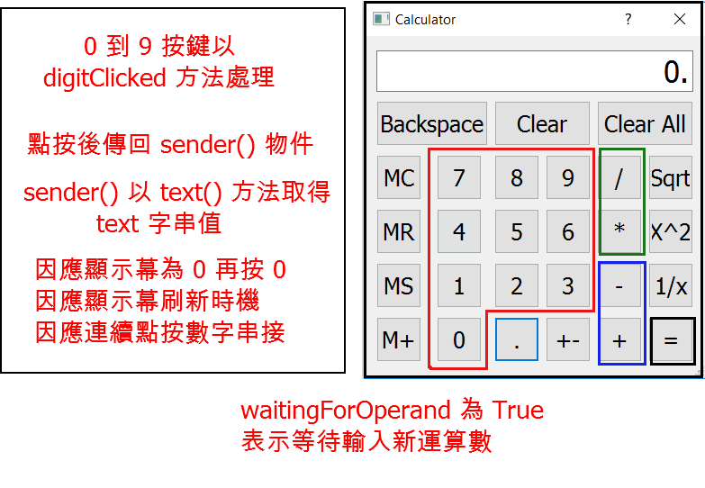

Python3 + PyQt5 計算機程式開發
PyQt5 計算機程式說明
按鍵分類
- 0 ~9 數字按建, 點按後由 digitClicked() 方法槽承接處理
- 直接運算元, 包括 Sqrt, x^2 與 1/x, 點按後由 unaryOperatorClicked() 方法槽承接處理
- 加或減運算元, 包括 + 與 - 運算, 點按後由 additiveOperatorClicked() 方法槽承接處理
- 乘或除運算元, 包括 * 與 / 運算, 點按後由 multiplicativeOperatorClicked() 方法槽承接處理
- 其餘按鍵則各自以特定的方法槽承接處理
變數與運算流程考量
- 數字按鍵以 zero, one, two, three, four, five, six, seven, eight, nine 命名
- 顯示幕以 display 命名
- 等號以 equalButton 命名
- 與 MS, M+, 或 MC 按鍵相關的計算機記憶體數值, 存入 sumInMemory 變數對應的記憶空間
- 以 sumSoFar 儲存累計數值, 使用者按下等號後, sumSoFar 重新計算結果, 並顯示在 display 幕, Clear All 按鍵則重置 sumSoFar 為 0
- 以 factorSoFar 儲存乘或除運算子運算過程所得的暫存數值
- 以 pendingAdditiveOperator 儲存使用者最後點按的加或減運算子字串
- 以 pendingMultiplicativeOperator 儲存使用者最後點按的乘或除運算子字串
- 以 waitingForOperand 界定使用者是否處理運算數輸入階段, 若 waitingForOperand 為 True, 表示計算機正在等待使用者"開始"輸入運算數
- waitingForOperand 起始值為 True, 只有重新進入 digitClicked 方法, display 才會 clear(), 否則在顯示幕非為 0 的情況下, 將堆疊數字字串
- 因為考量先乘除後加減運算順序, 將加減與乘除處理方法分開, 若使用者輸入加減運算子後, 緊接乘除運算子, 計算機會先乘除運算後再加減
- 直接運算元可以在使用者按下按鍵後, 直接對 display 中的數值進行處理, 無需其他暫存需求
- pendingAdditiveOperator, pendingMultiplicativeOperator, sumSoFar, factorSoFar 與 waitingForOperand, 在 Dialog 類別建構子中設定起始值
數字按鍵點按處理
- 使用者點按數字按鍵, 將會送出該按鍵的 clicked() 訊號
- 按鍵的 clicked() 訊號將會根據設定, 觸發 digitClicked() 方法槽
- 由於 PyQt5 的 Push Button 以 Qt5 中的 QObject::sender() 送出訊號, 此函式會傳回 sender 作為 QObject 的指標
- 因為此一與 Push Button 配合的 sender 為 Button 物件, 因此可以在 digitClicked() 函式中, 利用 sender().text() 取得按鍵的 text 字串
- 假如使用者點按 0, display 顯示字串 0, 但是若一開始輸入兩個以上的 0, digitClicked() 應該仍只顯示 0 字串
- 但是若計算機處於等待新運算數輸入時 (以 waitingForOperand 判定), 新數字在顯示前, display 應該要清除先前所顯示的數字
- 最後, 除了在顯示幕為 0 之後的 0 按鍵輸入, digitClicked() 方法槽不會繼續判定是否清除顯示幕或堆疊數字字串外, 所按的數字將會堆疊顯示
直接運算按鍵處理
- Sqrt, x^2 與 1/x 等按鍵的處理方法為 unaryOperatorClicked(), 與數字按鍵的點按回應相同, 透過 sender().text() 取得按鍵上的 text 字串
- unaryOperatorClicked() 方法隨後根據 text 判定運算子後, 利用 display 上的運算數進行運算後, 再將結果顯示在 display 顯示幕
- 若進行運算 Sqrt 求數值的平方根時, 顯示幕中為負值, 或 1/x 運算時, x 為 0, 都視為無法處理的情況, 以呼叫 abortOperation() 處理
- abortOperation() 方法則重置所有起始變數, 並在 display 中顯示 "####"
- 直接運算子處理結束前, 運算結果會顯示在 display 中, 而且運算至此告一段落, 計算機狀態應該要回復到等待新運算數的階段, 因此 waitingForOperand 要重置為 True
加或減按鍵處理
- 使用者按下加或減運算子按鍵時, 程式設定以 additiveOperatorClicked() 處理
- 進入 additiveOperatorClicked() 後, 必須先查是否有尚未運算的乘或除運算子, 因為必須先乘除後才能加減
- 先處理乘與除運算後, 再處理加或減運算後, 將 sumSoFar 顯示在 display 後, 必須重置 sumSoFar 為 0, 表示運算告一段落
乘或除按鍵處理
- 使用者按下乘或除運算子按鍵時, 程式設定以 multiplicativeOperatorClicked() 處理
- 進入 multiplicativeOperatorClicked() 後, 無需檢查是否有尚未運算的加或減運算子, 因為乘除運算有優先權
- 先處理乘與除運算後, 再處理加或減運算, 將 sumSoFar 顯示在 display 後, 必須重置 sumSoFar 為 0, 表示運算告一段落
小數點按鍵處理
- 使用者按下小數點按鍵後, 以 pointClicked() 方法處理, 直接在 display 字串中加上 "." 字串
數值變號按鍵處理
- 使用者按下變號按鍵後, 由 changeSignClicked() 處理, 若顯示幕上為正值, 則在 display 字串最前面, 疊上 "-" 字串
- 假如顯示幕上為負值, 則設法移除 display 上字串最前方的 "-" 字元
退格按鍵處理
- 使用者按下退格按鍵後, 由 backspaceClicked() 處理, 這時可以利用 Python 字串數列中的 [:-1], 保留除了最後一個字元的字串
- 離開 backspaceClicked() 前 ,將顯示幕中原有字串的 [:-1] 字串, 顯示在 display 上
- 若退格後 display 上為空字串, 則顯示 0, 並且將 waitingForOperand 起始設為 True, 表示等待新運算數中
清除按鍵處理
- 使用者按下 Clear 按鍵後, 以 clear() 方法處理, 進入函式後, 將現有的運算數重置為 0
- 離開 clear() 前, 將 waitingForOperand 起始設為 True, 表示等待新運算數中
- ClearAll 按鍵, 則將所有變數全部重置為起始狀態
記憶體按鍵處理
- clearMemory() 方法與 "MC" 按鍵對應, 清除記憶體中所存 sumInMemory 設為 0
- readMemory() 方法與 "MR" 按鍵對應, 功能為讀取記憶體中的數值, 因此將 sumInMemory 顯示在 display, 作為運算數
- setMemory() 方法則與 "MS" 按鍵對應, 功能為設定記憶體中的數值，因此取 display 中的數字, 存入 sumInMemory
- addToMemory() 方法與 "M+" 按鍵對應, 功能為加上記憶體中的數值, 因此將 sumInMemory 加上 display 中的數值
- 因為 setMemory() 與 addToMemory() 方法, 都需要取用 display 上的數值, 因此必須先呼叫 equalClicked(), 以更新 sumSoFar 與 display 上的數值
calculate() 方法
- calculate() 方法中的運算, 以 rightOperand 為右運算數
- 當執行加或減運算時, 左運算數為 sumSoFar
- 當執行乘或除運算時, 左運算數為 factorSoFar
- 若運算過程出現除與 0 時, 將會回傳 False
PyQt5 參考資料

Qt5 - sender()
sip - sip: sender()
PyQt5 計算機程式原始碼
# Dialog 類別同時繼承 QDialog 與 Ui_Dialog 類別
class Dialog(QDialog, Ui_Dialog):
"""
Class documentation goes here. (若有類別相關說明文件內容, 放在此處)
"""
def __init__(self, parent=None):
"""
Constructor (類別建構子)
@param parent reference to the parent widget
@type QWidget
"""
# 利用 super 類別調用 parent 類別中的建構子
super(Dialog, self).__init__(parent)
# 上一行在 Python3 可以寫為 super().__init__()
# 利用 Ui_Dialog 類別中的 setupUi 方法, 以 self 視窗部件建立使用者介面
self.setupUi(self)
# 以上程式碼由 Eric6 表單頁面中的滑鼠右鍵, Generate Dialog Code 指令產生
# 當多個 signal 同時指向同一個 slot 處理時, 採用 for loop
num_button = [self.one, self.two, \
self.three, self.four, self.five, self.six, self.seven, self.eight, self.nine, self.zero]
# 用於產生加號與減號 signals 與 slots 用的數列
plus_minus = [self.plusButton, self.minusButton]
# 用於產生乘號與除號 signals 與 slots 用的數列
multiply_divide = [self.timesButton, self.divisionButton]
#self.one.clicked.connect(self.number)
# 數字按鍵的 signals 與 slots 設定
for i in num_button:
i.clicked.connect(self.digitClicked)
# 加減鍵的 signals 與 slogts 設定
for i in plus_minus:
i.clicked.connect(self.additiveOperatorClicked)
# 等於按鍵的 signal 與 slot 設定
self.equalButton.clicked.connect(self.equalClicked)
# 清除
self.clearButton.clicked.connect(self.clear)
# 全部清除
self.clearAllButton.clicked.connect(self.clearAll)
# 清除記憶
self.clearMemoryButton.clicked.connect(self.clearMemory)
# 讀取記憶
self.readMemoryButton.clicked.connect(self.readMemory)
# 設定記憶
self.setMemoryButton.clicked.connect(self.setMemory)
# 按下小數點
self.pointButton.clicked.connect(self.pointClicked)
# 按下變號
self.changeSignButton.clicked.connect(self.changeSignClicked)
# 按下上一步
self.backspaceButton.clicked.connect(self.backspaceClicked)
# 加入記憶體
self.addToMemoryButton.clicked.connect(self.addToMemory)
# 單一運算子
unaryOperator = [self.squareRootButton, self.powerButton, self.reciprocalButton ]
for i in unaryOperator:
i.clicked.connect(self.unaryOperatorClicked)
# 乘與除按建的 signals 與 slots 設定
for i in multiply_divide:
i.clicked.connect(self.multiplicativeOperatorClicked)
# 等待運算的加或減
self.pendingAdditiveOperator = ''
# sumSoFar 儲存運算流程中所累計的數值
# 當使用者按下 = 後, sumSoFar 重新計算並將數字顯示在 display 區
# 當使用者按下 Clear All, sumSoFar 將重置回 0
self.sumSoFar = 0.0
# 起始時, 等待使用者輸入運算數值變數為真
self.waitingForOperand = True
# sumInMemory 儲存計算機記憶體中的值, 配合 MS, M+, 或 MC 按鈕使用
self.sumInMemory = 0.0
# factorSoFar 暫存按下乘或除運算時的數值
self.factorSoFar = 0.0
# 等待運算的乘或除
self.pendingMultiplicativeOperator = ''
def digitClicked(self):
# sender() 為使用者點擊按鈕時送出的按鈕指標類別, 在此利用此按鍵類別建立案例
# 所建立的 clickedButton 即為當下使用者所按下的按鈕物件
clickedButton = self.sender()
# text() 為利用按鈕物件的 text 方法取得該按鈕上所顯示的 text 字串
digitValue = int(clickedButton.text())
# when user clicks 0.0
if self.display.text() == '0' and digitValue == 0.0:
return
# if under digit input process, clear display for the very first beginning
# waitingForOperand 為 True 已經點按運算數值按鈕
if self.waitingForOperand:
# 清除 display
self.display.clear()
# 將判斷是否已經點按運算數值按鈕的判斷變數重新設為 False
self.waitingForOperand = False
# 利用 setText() 設定 LineEdit 元件顯示字串, 利用 text() 取出目前所顯示的字串, 同時也可利用 text() 擷取按鈕物件上顯示的字串
#self.display.setText(self.display.text() + self.sender().text())
self.display.setText(self.display.text() + str(digitValue))
def additiveOperatorClicked(self):
# 確定按下加或減
clickedButton = self.sender()
# 確定運算子, 為加或減
clickedOperator = clickedButton.text()
# 點按運算子之前在 display 上的數字, 為運算數
operand = float(self.display.text())
# 納入乘與除之後的先乘除後加減運算邏輯, 且納入連續按下乘或除可累計運算
if self.pendingMultiplicativeOperator:
if not self.calculate(operand, self.pendingMultiplicativeOperator):
self.abortOperation()
return
self.display.setText(str(self.factorSoFar))
operand = self.factorSoFar
self.factorSoFar = 0.0
self.pendingMultiplicativeOperator = ''
# 假如有等待運算的加或減, 進入執行運算
# 且納入連續按下加或減時, 可以目前的運算數及運算子累計運算
if self.pendingAdditiveOperator:
if not self.calculate(operand, self.pendingAdditiveOperator):
self.abortOperation()
return
# 顯示目前的運算結果
self.display.setText(str(self.sumSoFar))
else:
# 假如 self.pendingAdditiveOperator 為 False, 則將運算數與 self.fumSoFar 對應
self.sumSoFar = operand
# 能夠重複按下加或減, 以目前的運算數值執行重複運算
self.pendingAdditiveOperator = clickedOperator
# 進入等待另外一個運算數值的階段, 設為 True 才會清空 LineEdit
self.waitingForOperand = True
# 處理使用者按下乘或除按鍵時的 slot 方法
def multiplicativeOperatorClicked(self):
clickedButton = self.sender()
clickedOperator = clickedButton.text()
# 將按鈕顯示的 text 轉為浮點數
operand = float(self.display.text())
# 若連續按下乘或除, 則以目前的運算數與運算子執行運算
if self.pendingMultiplicativeOperator:
if not self.calculate(operand, self.pendingMultiplicativeOperator):
self.abortOperation()
return
# 將目前乘或除的累計運算數顯示在 display 上
self.display.setText(str(self.factorSoFar))
else:
self.factorSoFar = operand
# 能夠重複按下乘或除, 以目前的運算數值執行重複運算
self.pendingMultiplicativeOperator = clickedOperator
self.waitingForOperand = True
def unaryOperatorClicked(self):
clickedButton = self.sender()
clickedOperator = clickedButton.text()
operand = float(self.display.text())
if clickedOperator == "Sqrt":
if operand < 0.0:
self.abortOperation()
return
result = math.sqrt(operand)
elif clickedOperator == "X^2":
result = math.pow(operand, 2.0)
elif clickedOperator == "1/x":
if operand == 0.0:
self.abortOperation()
return
result = 1.0 / operand
self.display.setText(str(result))
self.waitingForOperand = True
def equalClicked(self):
# 從 display 取的運算數值
operand = float(self.display.text())
# 先乘除的運算處理
if self.pendingMultiplicativeOperator:
if not self.calculate(operand, self.pendingMultiplicativeOperator):
self.abortOperation()
return
# factorSoFar 為乘或除運算所得之暫存數值
operand = self.factorSoFar
self.factorSoFar = 0.0
self.pendingMultiplicativeOperator = ''
# 若有等待加或減的運算子, 執行運算
if self.pendingAdditiveOperator:
if not self.calculate(operand, self.pendingAdditiveOperator):
self.abortOperation()
return
self.pendingAdditiveOperator = ''
else:
self.sumSoFar = operand
self.display.setText(str(self.sumSoFar))
self.sumSoFar = 0.0
self.waitingForOperand = True
# 右運算數與等待運算子當作輸入
def calculate(self, rightOperand, pendingOperator):
# 進入計算流程時, 用目前輸入的運算數值與 self.sumSoFar 執行計算
if pendingOperator == "+":
self.sumSoFar += rightOperand
elif pendingOperator == "-":
self.sumSoFar -= rightOperand
elif pendingOperator == "*":
self.factorSoFar *= rightOperand
elif pendingOperator == "/":
if rightOperand == 0.0:
return False
self.factorSoFar /= rightOperand
return True
def pointClicked(self):
if self.waitingForOperand:
self.display.setText('0')
if "." not in self.display.text():
self.display.setText(self.display.text() + ".")
self.waitingForOperand = False
def changeSignClicked(self):
text = self.display.text()
value = float(text)
if value > 0.0:
text = "-" + text
elif value < 0.0:
text = text[1:]
self.display.setText(text)
def backspaceClicked(self):
if self.waitingForOperand:
return
text = self.display.text()[:-1]
if not text:
text = '0'
self.waitingForOperand = True
self.display.setText(text)
# clearButton 按鍵的處理方法
def clear(self):
# 在等待運算數階段, 直接跳出 slot, 不會清除顯示幕
if self.waitingForOperand:
return
self.display.setText('0')
# 清除顯示幕後, 重置等待運算數狀態變數
self.waitingForOperand = True
# clearAllButton 按鍵處理方法
def clearAll(self):
self.sumSoFar = 0.0
self.factorSoFar = 0.0
self.pendingAdditiveOperator = ''
self.pendingMultiplicativeOperator = ''
self.display.setText('0')
self.waitingForOperand = True
def clearMemory(self):
self.sumInMemory = 0.0
def readMemory(self):
self.display.setText(str(self.sumInMemory))
self.waitingForOperand = True
def setMemory(self):
self.equalClicked()
self.sumInMemory = float(self.display.text())
def addToMemory(self):
self.equalClicked()
self.sumInMemory += float(self.display.text())
def abortOperation(self):
self.clearAll()
self.display.setText("####")
Comments
comments powered by Disqus